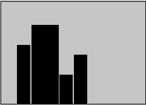
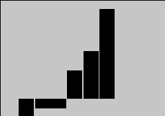

<vb>largeur,position,hauteur
Trace une barre verticale.
Taille, position et hauteur sont exprimées en pourcentages par rapport à la taille de l'objet graphique. Ces valeurs peuvent être des nombres décimaux.
Exemple :
ff.graph &= "<vb>10;10;60"
ff.graph &= "<vb>20;20;80"
ff.graph &= "<vb>10;40;30"
ff.graph &= "<vb>10;50;50"

<vb1>largeur,position,hauteur
<vb2>largeur,position,hauteur
<vb3>largeur,position,hauteur
Ces commandes sont identiques à <vb>. Les variantes proposées par ces commandes concernent uniquement le dessin des extrémités des barres. Cela permet de visualiser le fait que la barre n'ait pu être entièrement dessinée car elle dépasse des bornes.
b1 : la barre déborde en haut
b2 : la barre déborde en bas
b3 : la barre déborde en haut et en bas.
<bl>nnn
La commande <bl> (base line) permet de positionner la ligne zéro afin de pouvoir afficher des barres avec des valeurs négatives.
La valeur nnn est un pourcentage de la hauteur totale de l'objet graphique.
Cette commande doit se trouver avant les commandes d'affichage des barres (<vb>)
Par exemple, une valeur de 20 signifie que 20% de la hauteur sont réservés aux valeurs négatives et les 80 % restant aux valeurs positives.
Les valeurs possibles pour les barres sont maintenant de -20% a 100%.
Exemple :
ff.graph &= "<bl>20" ; 20% pour le négatif
ff.graph &= "<vb>10;10;-20"
ff.graph &= "<vb>20;20;-10"
ff.graph &= "<vb>10;40;30"
ff.graph &= "<vb>10;50;50"
ff.graph &= "<vb>10;60;95"

Remarque :
Avant de dessiner un histogramme, il faut donc balayer toutes les valeurs possibles pour déterminer la valeur de la commande <bl>.
Encadrement et hachurage des barres <cc> <ha>